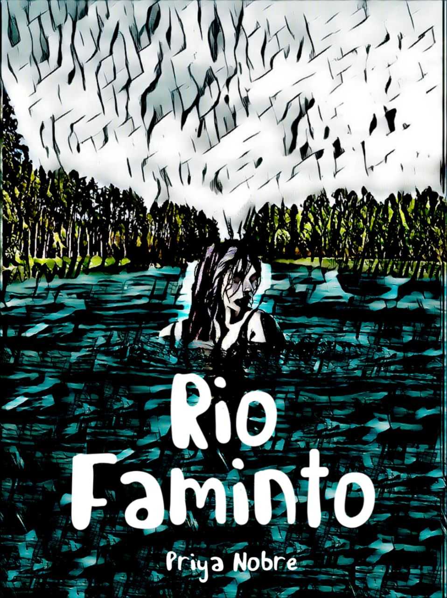

Como uma autora nacional, mergulho na criação de contos encantadores me inspirando no
mundo
da fantasia, universo geek e no folclore brasileiro. Meus livros estão
disponíveis no Amazon Kindle Direct Publishing.

Rio Faminto
Priya Nobre
"Meu pai não me contava as histórias sobre o rio e as criaturas que viviam nele, nem as da
floresta, não queria que eu acreditasse nelas. Queria que eu aprendesse matemática e virasse
doutora, e vivesse em um lugar em que as ruas são tão limpas que dá para se sentar nelas. Mas na
escola, as outras crianças contavam histórias que ouviram de seus pais, irmãos e avós. Elas
contavam o que vivia na escuridão, o que estava acordado quando dormíamos e o motivo de existir
Deus e termos que ir à missa. " Embarque com Maria Julia nesse suspense, com criaturas
folclóricas que vão se mostrar bem reais e assustadoras.
"O que a gente faz com o que fizeram com a gente" é uma obra que nos leva em uma jornada através
da dor da perda e da busca pela superação. Cada capítulo é uma experiência em si mesmo, uma
jornada que a autora nos guia com uma voz suave e compassiva através de cada desafio e
obstáculo. Com um estilo de escrita emotivo e poderoso, Priya Nobre nos inspira a enfrentar
nossos próprios desafios e a encontrar um caminho para a aceitação e a superação pessoal. Este
livro é um testemunho inspirador de coragem e perseverança, que fala ao coração de todos aqueles
que enfrentam a dor da perda e buscam um caminho para a cura interior.